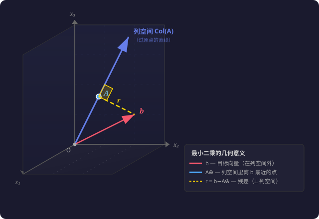

给你三个点：$(0, 0)$、$(1, 2)$、$(2, 1)$。你想找一条过原点的直线 $y = w x$，让它同时穿过这三个点。
对每个点写方程：
$w$ 不能同时等于 2 和 0.5。三个点不在同一条过原点的直线上——这个方程组无解。
精确解不存在，但我们可以找一个 $w$，让预测值和真实值之间的差距尽可能小。
对于任意 $w$，三个点的误差分别是：
$$\begin{aligned} \text{点1}(0,0)&:\; w \cdot 0 - 0 = 0 \\ \text{点2}(1,2)&:\; w \cdot 1 - 2 = w - 2 \\ \text{点3}(2,1)&:\; w \cdot 2 - 1 = 2w - 1 \end{aligned}$$误差不能直接加起来——正的负的会抵消。所以把每个误差平方再求和：
$$\text{总误差} = 0^2 + (w-2)^2 + (2w-1)^2$$展开：$= w^2 - 4w + 4 + 4w^2 - 4w + 1 = 5w^2 - 8w + 5$
这是一个开口向上的抛物线。最小值在哪？求导，令导数为 0：
$$\frac{d}{dw}(5w^2 - 8w + 5) = 10w - 8 = 0 \quad\Rightarrow\quad w = 0.8$$最佳直线是 $y = 0.8x$。它不是「正确」的，但它是「最好的」——所有可能直线里误差平方和最小的那一条。
这就是最小二乘法：「二」是平方，「乘」是误差。让误差的平方和最小。
上面的三个方程可以写成矩阵形式 $A\mathbf{x} = \mathbf{b}$：
$$\underbrace{\begin{bmatrix} 0 \\ 1 \\ 2 \end{bmatrix}}_{A_{3\times 1}} \underbrace{\vphantom{\begin{bmatrix}0\\1\\2\end{bmatrix}} w}_{\mathbf{x}_{1\times 1}} = \underbrace{\begin{bmatrix} 0 \\ 2 \\ 1 \end{bmatrix}}_{\mathbf{b}_{3\times 1}}$$$A$ 是 3×1 列向量，$w$ 是标量。$A w = \mathbf{b}$ 无精确解。最小二乘就是要找 $w$ 让 $\|A w - \mathbf{b}\|^2$ 最小。
上面用微积分求出来 $w = 0.8$。用伪逆行不行？下面不靠 SVD，直接从「最小化误差」这个目标把伪逆公式推出来。
① 目标函数：为什么写 $\|A w - \mathbf{b}\|^2$ 而不是 $\|A w - \mathbf{b}\|$？
向量 $\mathbf{v}$ 的模（长度）：$\|\mathbf{v}\| = \sqrt{v_1^2 + v_2^2 + \cdots}$——里面平方求和，外面开方。再加一个平方：$\|\mathbf{v}\|^2 = v_1^2 + v_2^2 + \cdots$——根号消掉了，回到纯粹的平方和。
开方是单调的，两者在同一个 $w$ 处取最小值。但平方和没有根号，求导干净。
② 展开：把模平方写成可求导的形式
$\|A w - \mathbf{b}\|^2 = (A w - \mathbf{b})^T (A w - \mathbf{b})$。（00-01 学过：$\|\mathbf{v}\|^2 = \mathbf{v}^T\mathbf{v}$。）
注意 $w$ 是标量，可以从转置里提出来：
$$\begin{aligned} (A w - \mathbf{b})^T (A w - \mathbf{b}) &= \underbrace{(A w)^T (A w)}_{\text{第一项}} \;-\; \underbrace{(A w)^T \mathbf{b}}_{\text{交叉项①}} \;-\; \underbrace{\mathbf{b}^T (A w)}_{\text{交叉项②}} \;+\; \underbrace{\mathbf{b}^T \mathbf{b}}_{\text{常数项}} \\[4pt] &= w^2 A^T A \;-\; 2 w A^T \mathbf{b} \;+\; \mathbf{b}^T \mathbf{b} \end{aligned}$$③ 求导，令其为 0
$A^T A$、$A^T \mathbf{b}$、$\mathbf{b}^T \mathbf{b}$ 都是常数（和 $w$ 无关）。对 $w$ 求导：
$$\frac{d}{dw}\bigl(w^2 A^T A - 2 w A^T \mathbf{b} + \mathbf{b}^T \mathbf{b}\bigr) = 2 A^T A \, w - 2 A^T \mathbf{b}$$令导数为 0：
$$2 A^T A \, w - 2 A^T \mathbf{b} = 0 \quad\Rightarrow\quad \boxed{A^T A \, w = A^T \mathbf{b}}$$这个方程叫法方程（normal equation）——最小二乘问题的核心。
④ 解出 $w$，认出伪逆
$A$ 是 $3 \times 1$ 列向量，$A^T A$ 是 $1 \times 1$——一个标量。直接除：
$$w = \frac{A^T \mathbf{b}}{A^T A}$$所以：
$$\boxed{A^+ = \frac{A^T}{A^T A}}$$⑤ 一句话总结：伪逆不是凭空定义的——它就是「让误差平方和最小的那个求解公式」里 $\mathbf{b}$ 前面的系数。
代入数字：$A^T \mathbf{b} = 0 \cdot 0 + 1 \cdot 2 + 2 \cdot 1 = 4$，$A^T A = 0^2+1^2+2^2 = 5$，$w = 4/5 = 0.8$——和求导结果一致 ✓。
$A$ 的列空间是过原点、方向为 $\begin{bmatrix}0\\1\\2\end{bmatrix}$ 的一条直线。$\mathbf{b} = \begin{bmatrix}0\\2\\1\end{bmatrix}$ 在这条直线外面。要找直线上离 $\mathbf{b}$ 最近的点。
残差 $\mathbf{r} = \mathbf{b} - A w$ 是连接线。距离最短的条件：$\mathbf{r}$ 垂直于直线（直角三角形斜边 > 直角边）。即 $A^T \mathbf{r} = 0$：
$$A^T(\mathbf{b} - A\hat{w}) = 0 \;\Rightarrow\; A^T A \hat{w} = A^T \mathbf{b} \;\Rightarrow\; \hat{w} = \frac{A^T \mathbf{b}}{A^T A} = 0.8$$垂足：$A\hat{w} = 0.8 \cdot [0,1,2]^T = [0, 0.8, 1.6]^T$。残差 $\mathbf{r} = [0, 1.2, -0.6]^T$，验证 $A^T \mathbf{r} = 0$ ✓。

推广到一般情况：$\underbrace{A}_{m \times n} \mathbf{x} \approx \underbrace{\mathbf{b}}_{m \times 1}$（$m > n$ 超定）。目标 $\min_{\mathbf{x}} \|A\mathbf{x} - \mathbf{b}\|^2$。
第 1 步：代入 SVD。 $A = U\Sigma V^T$：
$$\|A\mathbf{x} - \mathbf{b}\|^2 = \|U\Sigma V^T\mathbf{x} - \mathbf{b}\|^2$$第 2 步：消掉 $U$。 记 $\mathbf{v} = \Sigma V^T\mathbf{x}$：
$$\begin{aligned} \|U\mathbf{v} - \mathbf{b}\|^2 &= (U\mathbf{v} - \mathbf{b})^T (U\mathbf{v} - \mathbf{b}) \\ &= \mathbf{v}^T U^T U \mathbf{v} - 2\mathbf{v}^T U^T \mathbf{b} + \mathbf{b}^T \mathbf{b} \\ &= \|\mathbf{v} - U^T \mathbf{b}\|^2 \end{aligned}$$（$U^T U = I$，且交叉项是标量 → 转置等于自身 → 两个交叉项相等。）
口诀：$\|U\mathbf{v} - \mathbf{b}\|^2 = \|\mathbf{v} - U^T\mathbf{b}\|^2$——$U$ 可以「搬」到右边变 $U^T$。
代回 $\mathbf{v}$：$\boxed{\|U\Sigma V^T\mathbf{x} - \mathbf{b}\|^2 = \|\Sigma V^T\mathbf{x} - U^T\mathbf{b}\|^2}$。
第 3 步：换元。 $\mathbf{z} = V^T\mathbf{x}$，$\mathbf{c} = U^T\mathbf{b}$。问题变成 $\min_{\mathbf{z}} \|\Sigma\mathbf{z} - \mathbf{c}\|^2$。
为什么变简单了？ $\Sigma$ 是对角的——
$$\underbrace{\Sigma}_{m \times n} = \begin{bmatrix} \sigma_1 & & \\ & \ddots & \\ & & \sigma_n \\ \hline 0 & \cdots & 0 \\ \vdots & & \vdots \\ 0 & \cdots & 0 \end{bmatrix} \quad \begin{aligned} &\bigl\} n \text{ 行——对角 } \sigma_i \\ &\bigl\} m-n \text{ 行——全是 } 0 \end{aligned}$$$\Sigma\mathbf{z}$ 的前 $n$ 个分量是 $\sigma_i z_i$，后 $m-n$ 个分量全是 0。$\mathbf{c}$ 的前 $n$ 个是 $c_1,\dots,c_n$，后 $m-n$ 个是 $c_{n+1},\dots,c_m$。
减法后前 $n$ 项 $(\sigma_i z_i - c_i)^2$——可优化。后 $m-n$ 项 $(0 - c_j)^2$——$z$ 根本不出现，无法优化。这就是残差不可避免的原因：$\mathbf{b}$ 在 $A$ 列空间之外的部分，最小二乘也管不了。
第 4 步：逐项归零。 前 $n$ 项取 $z_i = c_i/\sigma_i$ 归零。
第 5 步：矩阵形式。 $\mathbf{z} = \Sigma^+ \mathbf{c}$，其中 $\Sigma^+$ 对角线放 $1/\sigma_i$。
第 6 步：回到 $\mathbf{x}$。 $\mathbf{z} = V^T\mathbf{x} \Rightarrow \mathbf{x} = V\mathbf{z}$，代入：
$$\mathbf{x} = V\Sigma^+ \mathbf{c} = V\Sigma^+ U^T \mathbf{b} = A^+ \mathbf{b}$$完整链条：换元 → 对角化 → 各管各优化 → 解得 $\mathbf{z} = \Sigma^+ \mathbf{c}$ → 沿原路走回 → $\mathbf{x} = A^+ \mathbf{b}$。SVD 的威力：把 $m$ 维纠缠问题崩解成 $n$ 个独立单变量平方项。
为什么误差要平方再求和，而不是直接把误差的绝对值加起来？（提示：导数能不能算？最小值解能不能写成闭式？）
——考察：平方误差 vs 绝对误差的可导性差异
从「残差垂直于 $A$ 的列空间」这个几何条件 $A^T(\mathbf{b} - A\hat{w}) = 0$，推导出法方程 $A^T A \hat{w} = A^T \mathbf{b}$。
——考察：几何条件 ↔ 代数方程的对应关系
在 SVD 推导的第 3 步换元后，为什么后 $m-n$ 个分量 $(0 - c_j)^2$ 无法优化？从 $\Sigma$ 的形状和 $\mathbf{z}$ 的维度来解释。
——考察：$\Sigma$ 的零行 = $A$ 列空间维度的上限